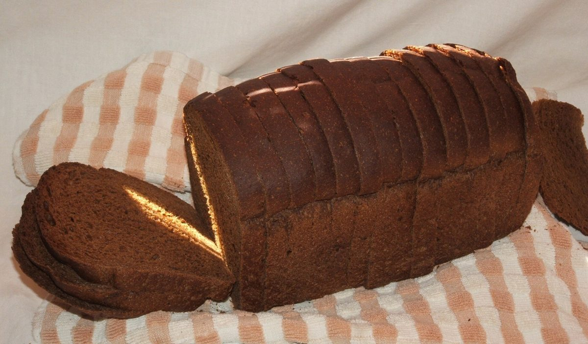

メニュー
メニュー
メニュー・価格は準備中です。確認でき次第、ここに載せます。
下の写真はすべてフリー素材のイメージです。お店で扱う商品ではありません。何が並ぶかは分かっていません。
1段め
準備中2段め
準備中3段め
準備中パンの形、いろいろ(イメージ)
♯ ふくらんだ形を眺める





メニュー
メニュー・価格は準備中です。確認でき次第、ここに載せます。
下の写真はすべてフリー素材のイメージです。お店で扱う商品ではありません。何が並ぶかは分かっていません。
パンの形、いろいろ(イメージ)
